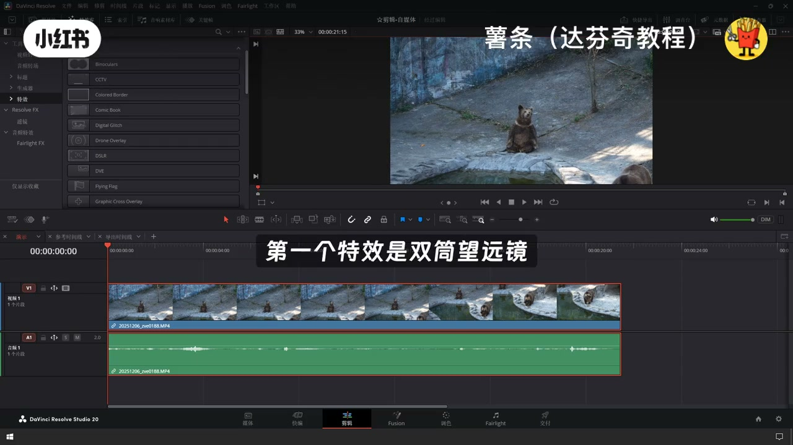
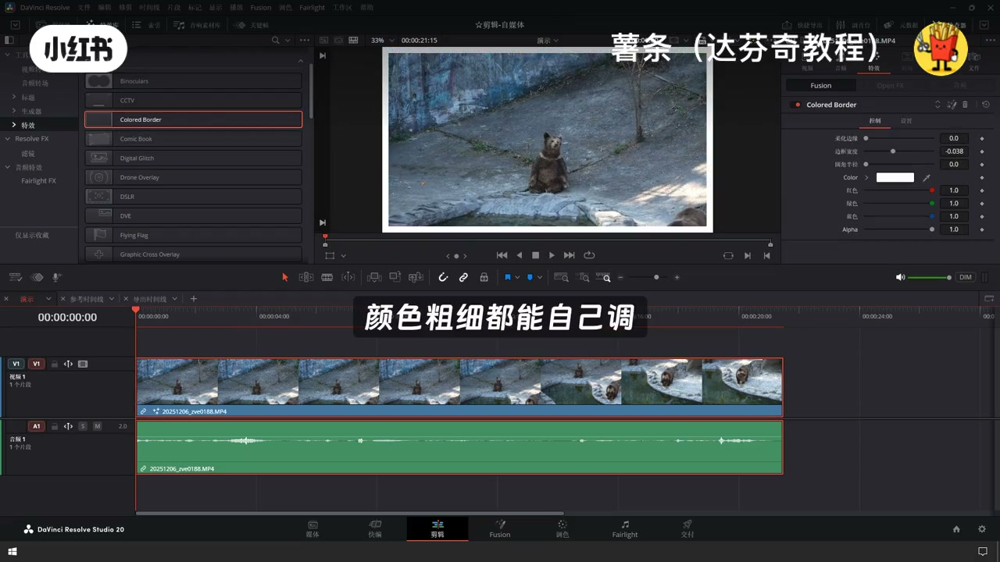
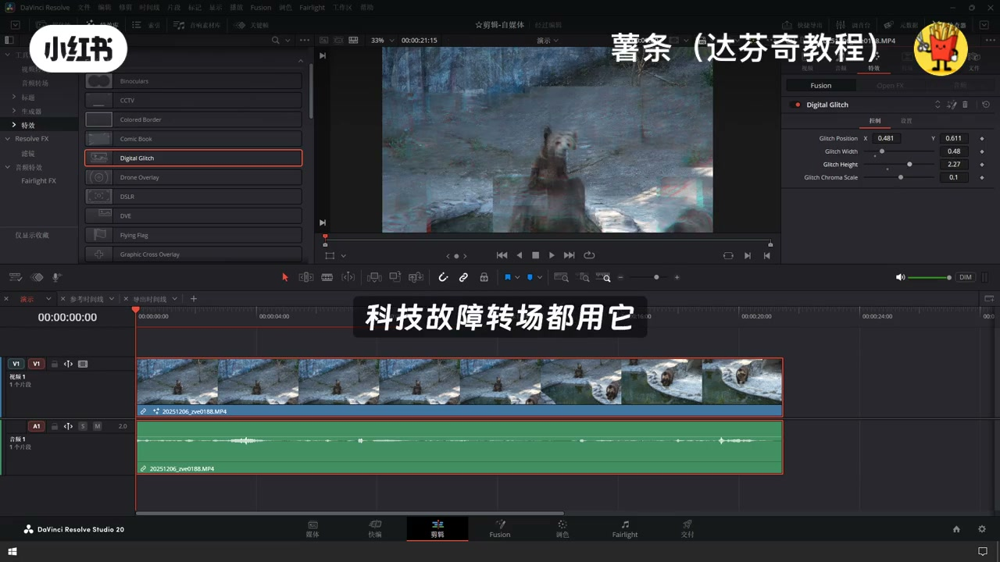
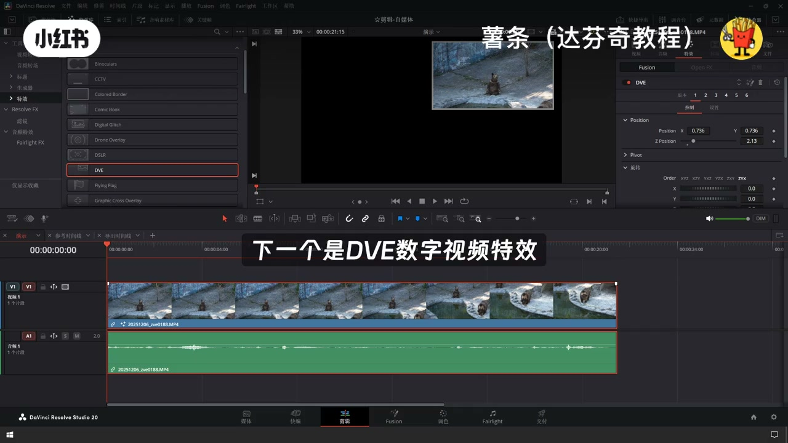
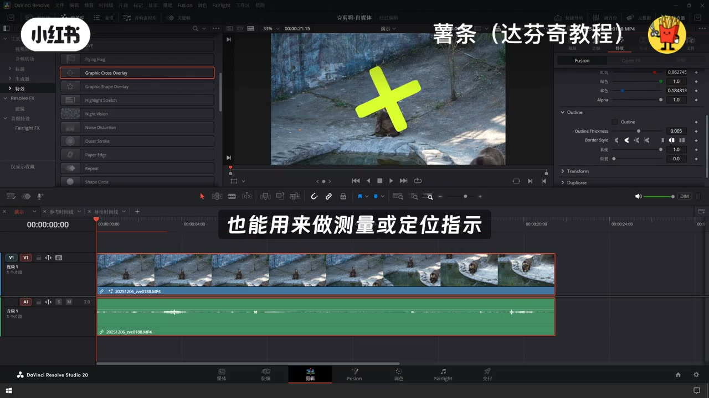
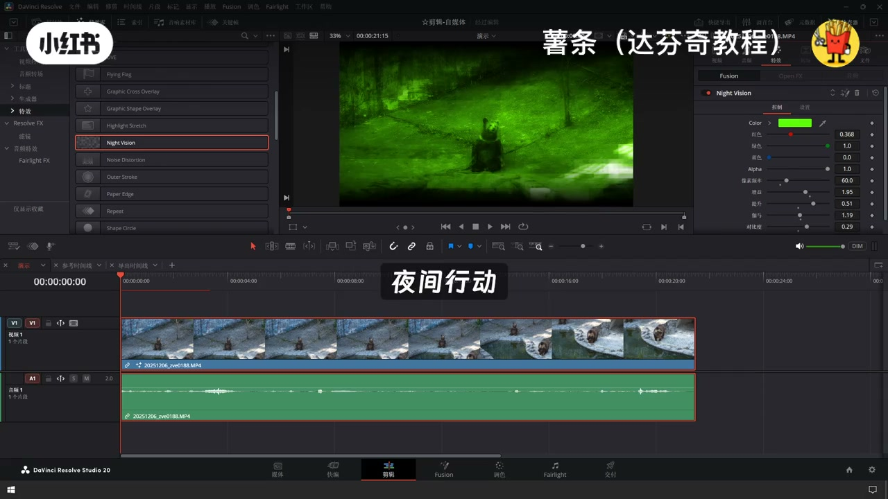
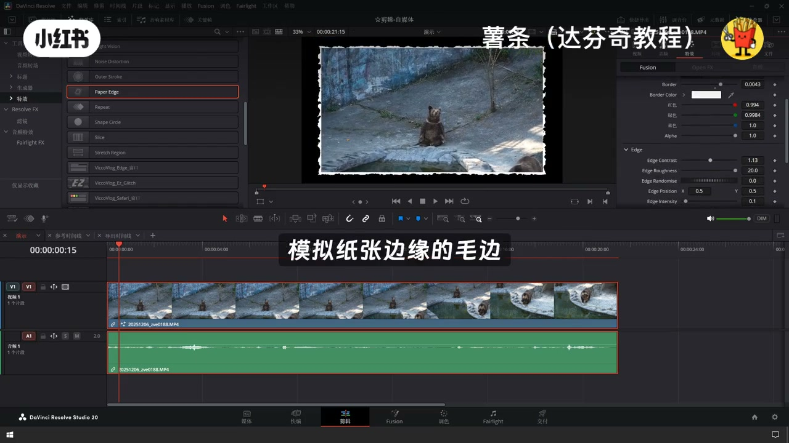
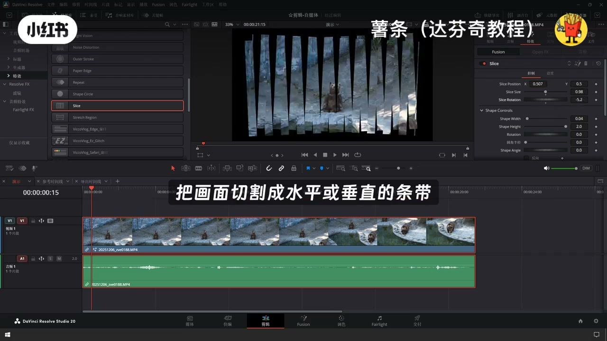

内容要点
「达芬奇剪辑面板自带的Fusion特效挨个做个介」教程要点：达芬奇剪辑面板自带的Fusion特效挨个做个介绍 → 达芬奇剪辑面板自带的特效并不是很多 → 但都是比较具有代表性的 → 如果觉得比较少的话…
知识结构
达芬奇剪辑面板自带的Fusion特效挨个做个介绍
一下就出来了
把高光区域向暗部或边缘拉伸
- 达芬奇剪辑面板自带的Fusion特效挨个做个介绍
- 达芬奇剪辑面板自带的特效并不是很多
- 但都是比较具有代表性的
- 如果觉得比较少的话
- 可以后期自己安装第三方的插件
达芬奇剪辑面板自带的Fusion特效挨个做个介绍
00:00–01:34达芬奇剪辑面板自带的Fusion特效挨个做个介绍
达芬奇剪辑面板自带的Fusion特效挨个做个介绍；达芬奇剪辑面板自带的特效并不是很多；但都是比较具有代表性的；如果觉得比较少的话；可以后期自己安装第三方的插件；也是非常简单方便的；挨个演示看一下效果；在左上角的特效库里面找到Fusion特效；第一个特效是双筒望远镜；选中这个特效；然后拖动到需要的片段上；这个特效是模拟望远镜观察的效果；画面中心清晰；边缘有圆形暗角和模糊；一般应用在第一人称视角镜头里面；在右侧检查器特效这里可以调节具体的参数；接下来是监控摄像头；会模拟那种老式壁录电视的画面；有隔离感扫描线；还能加上时间戳；色彩也会有点偏移；一般用在监控录像回放；悬疑片或者犯罪片里；营造那种复古又紧张的氛围；在右侧检查器里；你还能调分辨率造点多少；然后是彩色边框；还能给画面加一圈边框；颜色粗细都能自己调；还能改透明度；这个特效很实用；做视频包装；社交媒体封面都能用；也能用来突出画面主体；或者模拟老照片；胶片的黑边效果；下一个是漫画书；把它拖到片段上；画面立刻就变成漫画风格了；会加上粗黑的轮廓线；平涂的色彩；还有网点纹理；就像从漫画书里截出来的一样；适合用在漫画改编视频；创意广告或者MV里；复古短片也很搭；再然后是数字故障；拖到片段上；画面就会出现那种；信号错乱的效果；有画面撕裂；色彩分离；像素快；科技感和混乱感


01:32–03:11一下就出来了
一下就出来了；赛博朋克风格；科技故障转场都用它；MV和游戏预告里也很常见；接下来无人机叠加；拖到航拍片段上；就会出现无人机的铁底界面；像高度、速度、指南针、电池图标；这些飞行数据都能加上；看起来就像真的在飞无人机一样；主要用在航拍视频；无人机FPV镜头；或者做科技感Vlog；检查器里可以开关不同的QD元素；然后是单反相机；拖到片段上；就能模拟单反取景器的效果；有对焦框、曝光指示；还能加快门声；就像你正在用单反拍照一样；摄影教学视频Vlog里用的比较多；也能用来模拟拍照的过程；下一个是DV数字视频特效；你就可以对画面做缩放、旋转、位移；还能做3D变换；让画面动起来；它是个基础的画面变换工具；画面分屏、画中画、动态转场；视频包装都离不开它；再然后是飘扬旗帜；把它拖到你要当旗帜的素材上；不管是图片还是视频；都能像旗子一样飘起来；模拟风吹动的动态效果；品牌宣传、活动片头、体育赛事；历史题材视频里都能用；接下来是图形十字叠加；画面就会出现一个十字准星；颜色、粗细、位置都能自己调；像瞄准镜一样；FPS游戏视频；瞄准镜视角；科技界面里用的比较多；也能用来做测量或定位指示；图形形状叠加；能在画面上加各种几何图形；比如矩形、圆形；还能当蒙版用；或者做装饰；信息图表、视频包装、蒙版遮罩；突出显示特定区域都很方便；下一个是高光拉伸；拖到片段上；画面的高光部分会向外移出来


03:10–05:05把高光区域向暗部或边缘拉伸
把高光区域向暗部或边缘拉伸；模拟镜头眩光、光溢出的效果；用来增强画面氛围感；或者做梦幻、超现实的风格都很合适；再然后是夜视仪；画面就变成夜视仪的绿色画面；有绿色调、颗粒感、扫描线；中心还会更亮；像真的夜视仪一样；军事题材、夜间行动、悬疑片、游戏视频里都能用；接下来是噪点失真；画面会出现很多噪点和色彩扭曲；模拟信号干扰或老旧设备的画面；有随机噪点和色彩偏移；复古风格、VHS录像带效果、转场都能用；也能用来营造紧张或不安的氛围；然后是外部描边；拖到图形或文字上；就能给它们加一圈轮廓线；颜色、粗细都能自己调；让图形或文字更突出；增强文字可读性；突出图形元素、视频包装、信息图表里都很实用；下一个是纸张边缘；拖到片段上；画面边缘会像纸一样撕裂、磨损；模拟纸张边缘的毛边、撕裂效果很有复古感；复古风格、手张视频、模拟旧照片或文件都能用；也能做创意转场；再然后是重复；画面内容会在水平或垂直方向重复平铺；像万花筒一样；把画面复制成很多份；拼成图案或背景；创意背景、万花筒效果、视觉艺术、MV里都能用；接下来是圆形遮罩；画面会出现一个圆形蒙版；只显示圆内的内容；圆的大小位置都能调；用来聚焦画面中心；突出主体、模拟镜头、光运、转场都很合适；然后是切片；画面会被切成很多条带；还能独立移动；把画面切割成水平或垂直的条带；做出动态分割的效果；创意转场、信息图表、MV、科技感视频里都能用；最后一个是区域拉伸；拖到片段上；选中画面的一块区域就能把它拉伸或挤压；对特定区域做变形；可夸张也可细腻；用来做特效；喜剧效果、模拟镜头激变、转场都很合适




口述/画面要点（40段）
结合 Whisper medium 与画面大字整理；专有名词已校对。
达芬奇剪辑面板自带的Fusion特效挨个做个介绍
达芬奇剪辑面板自带的特效并不是很多
但都是比较具有代表性的
如果觉得比较少的话
可以后期自己安装第三方的插件
也是非常简单方便的
挨个演示看一下效果
在左上角的特效库里面找到Fusion特效
第一个特效是双筒望远镜
选中这个特效
然后拖动到需要的片段上
这个特效是模拟望远镜观察的效果
画面中心清晰
边缘有圆形暗角和模糊
一般应用在第一人称视角镜头里面
在右侧检查器特效这里可以调节具体的参数
接下来是监控摄像头
会模拟那种老式壁录电视的画面
有隔离感扫描线
还能加上时间戳
色彩也会有点偏移
一般用在监控录像回放
悬疑片或者犯罪片里
营造那种复古又紧张的氛围
在右侧检查器里
你还能调分辨率造点多少
然后是彩色边框
还能给画面加一圈边框
颜色粗细都能自己调
还能改透明度
这个特效很实用
做视频包装
社交媒体封面都能用
也能用来突出画面主体
或者模拟老照片
胶片的黑边效果
下一个是漫画书
把它拖到片段上
画面立刻就变成漫画风格了
会加上粗黑的轮廓线